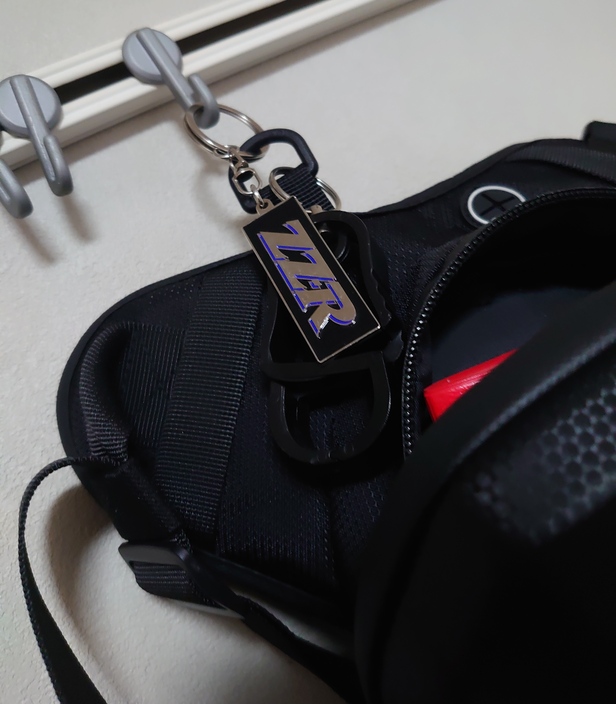
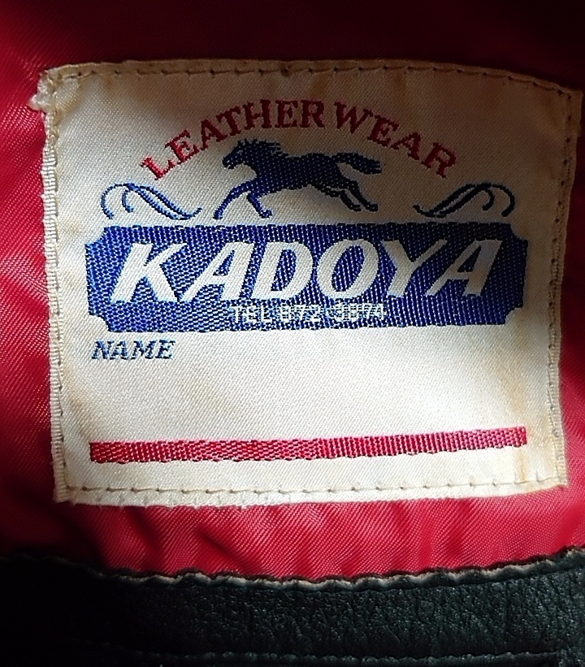
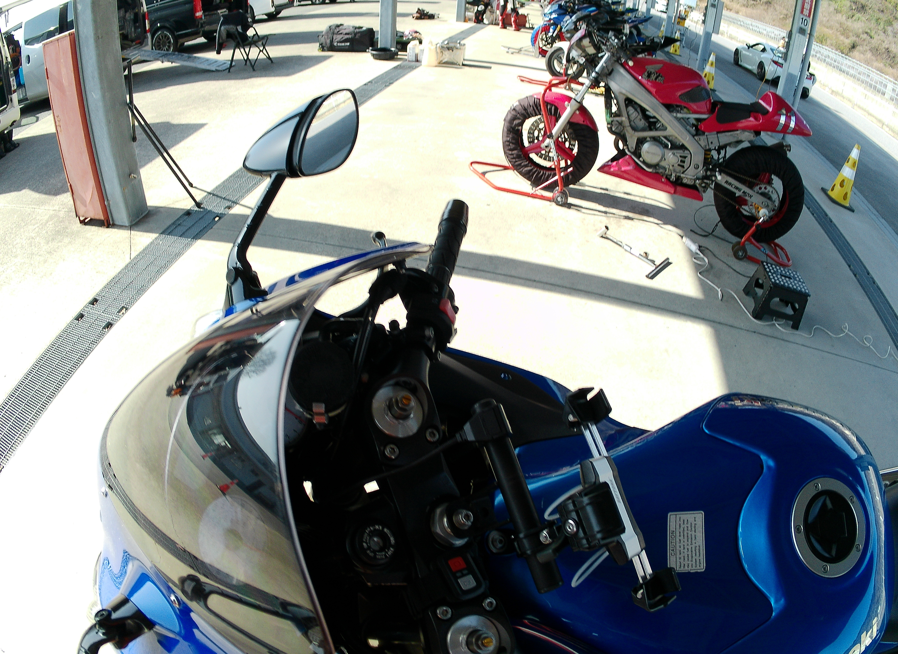
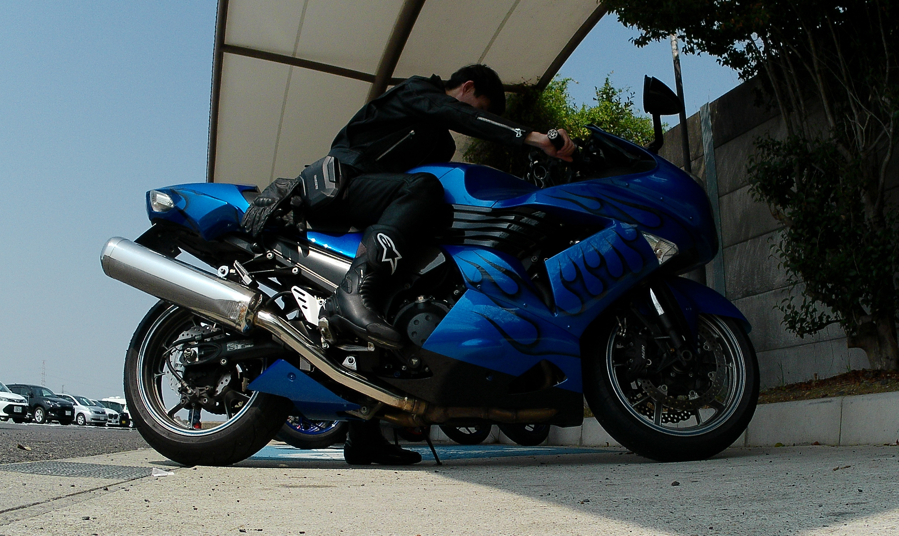

ようこそ当サイトへ!

このサイトは投稿者がバイクで走ってみておすすめだと思ったスポットを紹介するサイトです。
おすすめ度の評価方法
- 路面状況
- 休憩場所
- 雰囲気
それらをA~Eで以下のような評価することでレビューをここなっていくものとする。
A - とても良い
B - 良い
C - 普通
D - 悪い
E - とても悪い
また、そこで撮影した写真や一言メッセージなども載せていく。
愛車紹介
KAWASAKI ZZR1400 / Ninja ZX-14

| メーカー | KAWASAKI |
|---|---|
| 車種 | ZZR1400 / Ninja ZX-14 |
| 排気量 | 1,352cc |
| 年式 | 2006年式 |
| カテゴリ | メガスポーツツアラー |
| 最高出力 | 190PS / 200ps(ラム圧加圧時) |
| 最高速度 | 300km/hでリミッター作動 |
| 最高回転数 | 11000rpm |
| 全長 | 2,170mm |
| 仕向け地域 | 北米/EU/マレーシア |
| 乾燥重量 | 215kg |
特徴
ZZR1400
/ Ninja ZX-14は、カワサキが2006年に発表したメガスポーツツアラーであり、かつて世界最速を誇ったZZRシリーズの最大排気量モデルである。
乗り心地はスポーツバイクというよりはツアラー路線のセッティングになっており、低回転時からの力強いトルク感と加速感が特徴であり、追い越し、合流ではかなり安心感のある車両である。
また、SSと比べてサスペンションは固く沈みにくいのでSSのようなサスを沈めて曲がるような曲がり方はしずらい。
加速感に関してはスロットルを開けるとワンテンポ遅れて強烈な加速がやってくるようなものであり、軽量なリッターSSとの加速と比べるとナイフとハンマーのような違いがある。
世代的には大まかに分けて三世代に分かれており、電子制御なし1352ccの初代ZZR1400,初代にABSが付いたZZR1400ABS,排気量が1,441にアップしてトラコンやモード切り替え機能の付いたZX-14Rの三種類が登場している。
ちなみにZZR1400のシートやカウルはZX-14Rのカウルは見た目がことのなるもののポン付け可能であるのでZX-14R風のZZR1400にすることもZZR1400風のZX-14Rにすることもできるらしい...
また、別名のNinja ZX-14という名称は北米仕様の名称であり、EUやマレーシアではZZR-1400と呼ばれていたらしい。
カスタム個所はカウル一式が社外品になっており、ステップがK-factory製のバックステップとなっており、納車当時からメーカー不明のリアフェンダーレスキットが組み込まれている。
ちなみにこの個体は北米仕様の逆車のようでスピードメーターの外側が"マイル/時"表記内側が"km/h"表記両方がついており、センタースタンドはなく、カウル交換前はおそらく最初のオーナーが張ったであろうBRIGHTのステッカーが貼ってあることからZZR1400の歴史を感じられた。

元相棒 - kawasaki ZZR250
.JPG)
出会いと別れ
もともとは某有名バイク漫画の影響で大型免許とったらZZR1100乗るぞと意気込んでいたので見た目が似ているZZR400に乗りたかったが、
大型免許の金もためなければならなかったので250ccで選ぶ事となったためZZRシリーズ末弟のZZR250となった。
最後は乗り換えのための下取り車として分かれることとなった。
前オーナーが朝比奈カーボンマフラーをつけていてくれたのも選択肢にはいった理由の一つである、おかげで低温のドコドコ感を最初から楽しめた。
.JPG)
特徴
結果的に４ヶ月しか乗らなかったので良かったのだが、ひどいオイル食いを抱えた車両で
排ガスの白煙が目立つ車両だったのを覚えている特に寒い日は強かった。購入時はカムチェーンテンショナーが伸びきっており、エンジン音に交じってカチカチ音がひどかったりと年相応の状態の車両だった。
乗り心地はZZR1400同様スポーツツアラーらしいポジションで以外にも快適なポジションだった。
加速感に関しては高回転型高馬力の低排気量らしく出だしでもたつくものの最大回転数がかなり高いので勇ましいエンジン音を楽しめた。
.JPG)
.JPG)
元相棒 - yamaha SR125
.JPG)
出会いと別れ
バイク屋で現状販売でたたき売りされていた個体を購入。これで大型免許取得までクラッチワークを忘れないための練習機として使う予定だったが
タコメーターがついておらずどこまで回していいのかわからない恐怖がついて回っていた。
おかげでうまくパワーバンドに入れられずよく坂道で失速して止まっていた。
最後はZZR250への乗り換えのための下取り車として別れを迎えた。
.JPG)
特徴
上記の通りタコメーターがついていないのでとても初心者向けとは言えない使用になっており、決して早くはないものの、とても運転が大変だったのを覚えてる。ポジションについてはアメリカン風のポジションとなっておりかなり楽だった。 加速に関しては10馬力であり、原二の中ではましな部類ではないだろうか。 マイナー車であり社外パーツは皆無なので吸排気系のカスタムは行えなかったがアンダーミラー化や汎用ピリオンシートつけたりで見た目のカスタムが中心だった。
.JPG)
.JPG)
最後に




”バイクは所詮、ガキのオモチャだよ”……ガキで結構。
漫画 - キリンより